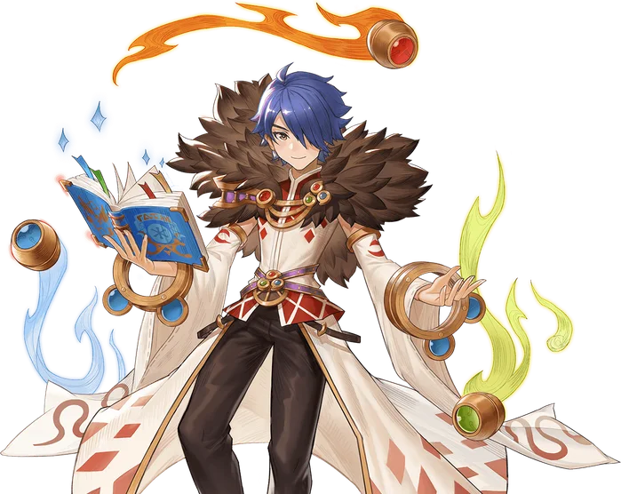

Third tier
Sorcerer
Sorcerer is the alternative advancement option for Sages. While the Scholar focuses its efforts on learning about and leveraging the unique attributes of magic itself, the Sorcerer turns their focus toward the four elemental attributes, manipulating them with control and precision that even the most powerful Wizards would be jealous of.
The core of the Sorcerer's kit revolves around their ability to summon Elemental Spirits. Summoning an elemental spirit has two main benefits. The first is that all magic used that matches the summoned Elemental will gain additional Magic Defense Pierce, in exchange for reducing the user's Resistance to the opposite. For example, summoning Ardor, the spirit of fire, will increase the Magic Pierce of all Fire property skills, but reduce the user's Water Property Resistance.
The more important aspect of these summoned elementals is the actions they take. Elementals do not attack or use skills of their own accord, and will not be attacked by monsters. Instead, they react to the skills cast by their summoner. When their summoner casts an offensive Sorcerer skill - of any element - the summoned elemental will echo it with an attack of their own. When the Sorcerer uses a supportive skill, the elemental will use their own support skill.
Naturally, this means that each summoned elemental comes with a pair of elemental skills. The first is focused on dealing direct damage, while the second has more of a utility effect. These skills not only serve to trigger the summoned elemental's skills, but also gain bonuses themselves based on the user's own bonuses to Summoned Entity attributes.
These abilities, together with the latent abilities of the summoned elementals and the Sorcerers inherited skills from Mage and Sage serve to create a class with great damage and utility, together with the flexibility to match any situation they find themselves in.

Skill list
Skills
Grouped the way the tree is grouped. Names, types, targets and the numbers behind every level come from the player wiki, so they match what you see in game.
Fire Skills3 skills
-
Summon ArdorSummonSelfLv 5
Summons the fire spirit: Fire MDef Pierce, reduced Water Resistance.
Summons Ardor, the spirit of indomitable fire, to aid in combat. While summoned, the user's Fire Property magic gains additional Magic Defense Pierce, but the user's Water Resistance is reduced. Only one Elemental Spirit can be summoned at a time.
Learn firstAgni's Wrath Lv3, Agni's Heat Lv3
Level by level
Level Fire Magic MDef Pierce Water Damage Taken Penalty 1 10% +10% 2 20% +20% 3 30% +30% 4 40% +40% 5 50% +50% -
Agni's WrathMagicalEnemyLv 10
Fire AoE that triggers the spirit's Attack Skill.
The user calls on Agni, spirit of flame, to incinerate their foes. Deals a burst of Fire Property damage to the target and all enemies around them. The damage of this skill is increased by the user's bonuses to Summoned Entity damage, and triggers the user's Summoned Elemental to use its Offensive ability. This skill's Cooldown is halved if Ardor is present.
Level by level
Level Damage SP Cost 1 450% 55 2 500% 60 3 550% 65 4 600% 70 5 650% 75 6 700% 80 7 750% 85 8 800% 90 9 850% 95 10 900% 100 -
Agni's HeatSupportSelfLv 10
Burning-damage field that triggers the spirit's Support Skill.
The user calls on Agni, the spirit of flame, to infuse the targeted area with unnatural heat. For a short duration, all enemies that enter the targeted area take damage over time. The damage is based on the user's Burning Damage, but does not count as the actual Burning Status. The damage is further increased by the user's bonuses to Summoned Entity HP, and triggers the user's Summoned Elemental to use its Support Skill. This skill's Cooldown is halved if Ardor is present.
Level by level
Level Duration SP Cost 1 1s 110 2 2s 120 3 3s 130 4 4s 140 5 5s 150 6 6s 160 7 7s 170 8 8s 180 9 9s 190 10 10s 200
Water Skills3 skills
-
Summon DiluvioSummonSelfLv 5
Summons the water spirit: Water MDef Pierce, reduced Wind Resistance.
Summons Diluvio, the spirit of the endless ocean depths, to aid in combat. While summoned, the user's Water Property Magic gains additional Magic Defense Pierce, but the user's Wind Resistance is reduced. Only one Elemental Spirit can be summoned at a time.
Learn firstAqua's Breath Lv3, Aqua's Relief Lv3
Level by level
Level Water Magic MDef Pierce Wind Damage Taken Penalty 1 10% +10% 2 20% +20% 3 30% +30% 4 40% +40% 5 50% +50% -
Aqua's BreathMagicalGroundLv 10
Water AoE that triggers the spirit's Attack Skill.
Calls on Aqua, the spirit of water, to strike down their foes, creating a blast of frigid snow and ice to strike the targeted area. All enemies in the are take Water Property damage and have a chance to be Chilled. The damage of this skill is increased by the user's bonuses to Summoned Entity Damage, and triggers the user's Summoned Elemental to use its Offensive Skill. This skill's Cooldown is halved if Diluvio is present.
Level by level
Level Damage SP Cost 1 450% 55 2 500% 60 3 550% 65 4 600% 70 5 650% 75 6 700% 80 7 750% 85 8 800% 90 9 850% 95 10 900% 100 -
Aqua's ReliefSupportSelfLv 10
Healing rain that triggers the spirit's Support Skill.
Calls on Aqua, the spirit of water, to grant relief to their allies. Causes a gentle healing rain to fall around the user, gradually healing all allies within it over time. The amount of healing is increased by the user's bonuses to Summoned Entity HP, and triggers the user's Summoned Elemental to use its Support Skill. This skill's Cooldown is halved if Diluvio is present.
Level by level
Level Healing (per second) SP Cost 1 100 110 2 200 120 3 300 130 4 400 140 5 500 150 6 600 160 7 700 170 8 800 180 9 900 190 10 1000 200
Wind Skills3 skills
-
Summon ProcellaSummonSelfLv 5
Summons the wind spirit: Wind MDef Pierce, reduced Earth Resistance.
Summons Procella, the spirit of storm and gale, to aid in combat. While summoned, the user's Wind Property Magic gains additional Magic Defense Pierce, but the user's Earth Resistance is reduced. Only one Elemental Spirit can be summoned at a time.
Learn firstVentus's Gale Lv3, Ventus's Haste Lv3
Level by level
Level Wind Magic MDef Pierce Earth Damage Taken Penalty 1 10% +10% 2 20% +20% 3 30% +30% 4 40% +40% 5 50% +50% -
Ventus's GaleMagicalEnemyLv 10
Line-piercing Wind attack that triggers the spirit's Attack Skill.
Calls on Ventus, the spirit of the wind, to unleash a violent tornado at their foes, dealing damage to all enemies in a straight line. The damage of this skill is increased by the user's bonuses to Summoned Entity Damage, and triggers the user's Summoned Elemental to use its Offensive Skill. This skill's cooldown is halved if Procella is present.
Level by level
Level Damage SP Cost 1 450% 55 2 500% 60 3 550% 65 4 600% 70 5 650% 75 6 700% 80 7 750% 85 8 800% 90 9 850% 95 10 900% 100 -
Ventus's HasteSupportSelfLv 10
Party ASPD and cast-speed buff that triggers the spirit's Support Skill.
The user calls on Ventus, the spirit of the wind, to accelerate their party members. For a short duration, all party members have increased Attack Speed and reduced Variable Cast Time. It also triggers the user's Summoned Elemental to use its Support Skill. This skill's Cooldown is halved if Procella is present.
Level by level
Level Attack Speed Bonus VCT Reduction SP Cost 1 0.5 2% 110 2 1 4% 120 3 1.5 6% 130 4 2 8% 140 5 2.5 10% 150 6 3 12% 160 7 3.5 14% 170 8 4 16% 180 9 4.5 18% 190 10 5 20% 200
Earth Skills3 skills
-
Summon Terra MotusSummonSelfLv 5
Summons the earth spirit: Earth MDef Pierce, reduced Fire Resistance.
Summons Terra Motus, the spirit of earth and stone, to aid in combat. While summoned, the user's Earth Property Magic gains additional Magic Defense Pierce, but the user's Fire Resistance is reduced. Only one Elemental Spirit can be summoned at a time.
Learn firstTerra's Fangs Lv3, Terra's Shield Lv3
Level by level
Level Earth Magic MDef Pierce Fire Damage Taken Penalty 1 10% +10% 2 20% +20% 3 30% +30% 4 40% +40% 5 50% +50% -
Terra's FangsMagicalEnemyLv 10
Earth AoE that triggers the spirit's Attack Skill.
Call on Terra, spirit of the earth, to create a tremor in the ground at the targeted location. All enemies in the area are struck for Earth Property damage. The damage of this skill is increased by the user's bonuses to Summoned Entity Damage, and it triggers the user's Summoned Elemental to use its Offensive Skill. This skill's Cooldown is halved if Terra Motus is present.
Level by level
Level Damage SP Cost 1 450% 55 2 500% 60 3 550% 65 4 600% 70 5 650% 75 6 700% 80 7 750% 85 8 800% 90 9 850% 95 10 900% 100 -
Terra's ShieldSupportSelfLv 10
Party damage-absorbing barrier that triggers the spirit's Support Skill.
Calls on Terra, spirit of the earth, to protect all of the user's party members. Each party member receives a shield that absorbs half of the damage they would take from all Physical and Magical damage. The shield ends after a set duration or after it has absorbed a certain amount of damage. The shield's HP is increased by the user's Barrier Potency and by the user's bonuses to Summoned Entity HP. It also triggers the user's Summoned Elemental to use its Support Skill. This skill's Cooldown is halved if Terra Motus is present.
Level by level
Level Shield HP SP Cost 1 500 110 2 1000 120 3 1500 130 4 2000 140 5 2500 150 6 3000 160 7 3500 170 8 4000 180 9 4500 190 10 5000 200
From the players
See it played
Come find out what changed
Make an account, grab the client, and come and see what changed.